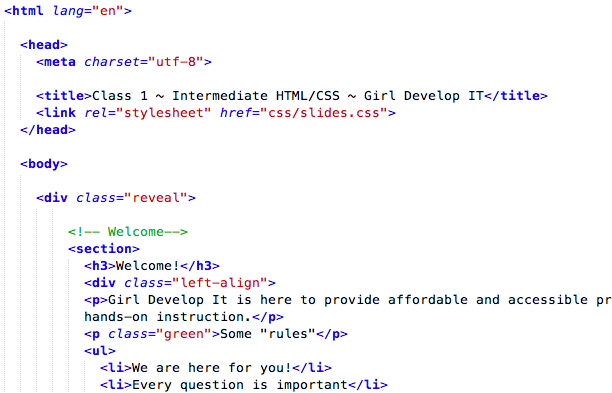

opacity: 1;
rgba(255, 0, 0, 1);
Network: First Round Capital guest
Password: frclovesphilly
Please download workshop files at:
http://gdiphilly.github.io/intermediate-html-css/workshop-files.zip
All slides are available at:
http://gdiphilly.github.io/intermediate-html-css
Slack is a free, chat and messaging system available as either a web or native application for your desktop or mobile device. Sign up here:
http://bit.ly/gdi-philly-slack

Last reminder to download the files for today's class!
We've set up the folder structure for the site today to reflect common practices used.

We've provided a copy of the site you'll be building today with notes on how to break down the layout of the page.
A website is a way to present your content to the world, using HTML and CSS to make it look good.
A paragraph is your content
<p>A paragraph is your content</p>A paragraph is your content
Document Object Model
Everything is a node.
A family tree

Parents, children, ancestors, descendents, and siblings.
<tagname>Stuff in the middle</tagname><p>This is a sample paragraph.</p><div>
<p>
<a><span></span></a>
</p>
</div><img /><br /><p lang="fr">C'est la vie</p>
<img src="my.picture.jpg"/>CSS = Cascading Style Sheets
CSS is a "style sheet language" that lets you style the elements on your page.
CSS is works in conjunction with HTML, but is not HTML itself.
selector {
property: value;
}A block of CSS is a rule block.
The rule starts with a selector.
It has sets of properties and values.
A property-value pair is a declaration.
Declarations: Property and value of style you plan use on HTML element.
Declarations end with a semicolon
Declarations can be grouped and are surrounded by curly brackets.
selector {
property: value;
property: value;
property: value;
}p {
property: value;
}Selects all paragraph elements.
img {
property: value;
}Selects all image elements.
#footer {
property: value;
}Selects all elements with an id of "footer".
<p id="footer">Copyright 2011</p>The associated HTML.
.warning {
color: red;
}Selects all elements with a class of "warning".
<p class="warning">Run away!</p>The associated HTML.
p em {
color: yellow;
}Selects all em elements that are within a paragraph
<p>This is <em>important.</em></p>The associated HTML.
p > em {
color: yellow;
}Same as above, but only selects direct descendents (children).
p { color: blue; font-style: italic; }
p span { font-weight: normal; }
p { color: red; font-weight: bold; }
<p>
<span>This is the span</span>
</p>This is the span
All other things being equal...
Every part of your selector will be checked by the browser, so the shorter you can make it, the better.
p a.green {}
.green {}CSS is parsed from right to left, so the more specific you can be towards the right, the better.
div.entry p a {}
div.entry p.diary aHTML & CSS are awesome, right?
But how do people use them really?
Here's a few things we'll be covering today:
Even though HTML is the structure and CSS is the design, some HTML elements have default styles
Different browsers display these things differently. A reset gets rid of these inconsistencies.
Examples include:
margin: 0;
padding: 0;
border: 0;
font-size: 100%;
font: inherit;
vertical-align: baseline;
list-style: none;
We've done all the hard work for you! Instead of typing this out - we've included this in our example files.
Fixed
Fluid
Wrappers are a good way to center content if the screen width is wider than your content.
.container {
width: 100%; /* take up full viewport width */
max-width: 1400px; /* if viewport is larger than 1440px,
don't let it take up 100% */
margin: 0 auto; /* center content in the viewport */
}
Formally, HTML5 is the W3C’s specification for the next version of HTML.
Informally, people use "HTML5" to refer to a whole set of new web standards and abilities:
Members from Apple, Mozilla, & Opera set out to develop HTML5.
First draft is written, but changes are still coming. HTML5 is continually evolving.
HTML5 semantic elements supported on...

Too much to cover in our time together
But here are some highlights:
frame, frameset, noframes)font, big, center)Gives some old elements semantic meaning and separates them from presentation (e.g.
b, i, strong, em)
<!DOCTYPE html>
Minimum information required to ensure that a browser renders using standards mode
<!DOCTYPE HTML PUBLIC "-//W3C//DTD HTML 4.01//EN"
"http://www.w3.org/TR/html4/strict.dtd">
<!DOCTYPE html PUBLIC "-//W3C//DTD XHTML 1.0 Strict//EN"
"http://www.w3.org/TR/xhtml1/DTD/xhtml1-strict.dtd">
Let's include it in a header, since we know we'll be grouping related content here.
Remember, using fixed position is like using absolute position, except that it's fixed to the viewport, not the containing element.
We also have to define a width for it, and its location.
nav {
position: fixed;
top: 0;
left: 0;
background: #fafafa;
border-bottom: 2px solid #ccc;
height: 70px;
width: 100%;
}Because we've fixed the nav to the top of the viewport, we need to bump the content of the
body down to be visible to the user.
This should be the same, or more than, the height of the navigation bar.
body {
padding-top: 70px;
}
nav {
position: fixed;
top: 0;
left: 0;
background: #fafafa;
border-bottom: 2px solid #ccc;
height: 70px;
width: 100%;
}Now we need to get those list items next to each other instead of stacked.
Let's float them to the left and add some padding to the links so they have a large clickable area.
nav {
position: fixed;
top: 0;
left: 0;
background: #fafafa;
border-bottom: 2px solid #ccc;
height: 70px;
width: 100%;
}
nav li {
float: left;
width: auto;
}
nav li a {
padding: 25px 10px;
display: block;
}
We can use an
H1 with text replacement to include a brand, or logo, in the corner that will still work if images are turned off, making it accesible to screen readers.
#brand {
color: transparent;
background: url(../images/z.png) no-repeat top left;
height: 60px;
width: 60px;
float: left;
margin: 5px;
}
nav ul {
float: right;
width: auto;
} Notice how the edge of the nav bumps up against the edge of the browser? Let's fix that by adding a container around it.
Let's give the container a fixed width and see what happens.
.container {
width: 1024px;
margin: 0 auto;
}Now wherever we use
.container it will be 1024px wide and centered.
Let's make some small tweaks to the navigation
text-decoration


Our Hero
section should look a little something like this:
<section id="hero">
<img src="images/zebra.jpg" alt="IMA Zebra" />
IMA Zebra
Africa
</section> Now is where the fun really happens!
#hero {
background: url(../images/zebra-hero.jpg) no-repeat top left;
color: #fafafa;
text-align: center;
}
Let's give it a height and some padding too.
#hero {
background: url(../images/zebra.jpg) no-repeat top left;
color: #fafafa;
text-align: center;
height: 350px;
padding: 25px 0;
}
Remember our Box Model. Padding adds to the height & width of elements.
So the height of our hero will be
400px
Things that are wrong with this hero right now:
Let's make the profile image a little smaller.
We'll use CSS Targeting with the descendant selector to style the image.
#hero img {
width: 150px;
}That should do it
Okay, it's not really magic, it's just a bit of CSS3.
Simply put, allows you to create rounded corners on boxes.
Designers rejoice!
20px radius on all corners
#hero img {
border-radius: 20px;
}
10px radius on top left & bottom right
40px on top right & bottom left
#hero img {
border-radius: 10px 40px;
}
10px radius on top left
20px radius top right
40px radius bottom right
80px radius bottom left
#hero img {
border-radius: 10px 20px 40px 80px;
}
50% radius on all corners
#hero img {
border-radius: 50%;
}
HTML5 and CSS3 are still new!
This is great, but it means that not all browsers treat new CSS3 properties the same
Flags it as a work-in-progress
When finished, the browser should support the non-prefixed name
Each browser has their own:
#hero img {
-moz-border-radius: 50%;
-webkit-border-radius: 50%;
-ms-border-radius: 50%;
-o-border-radius: 50%;
border-radius: 50%;
}Order matters! The non-prefixed version should always go last.
While you should always use the vendor prefixes when writing code, today we're just going to use the non-prefixed property.
This is to save time during the code exercises
Notice how the image is too large for the section? Let's fix that with a new property called
background-size
#hero {
background: url(../images/zebra.jpg) no-repeat top left;
color: #fafafa;
text-align: center;
height: 350px;
padding: 25px 0;
background-size: cover;
}
cover scales the image to the largest size such that both its width and its height can fit inside the content area.
Let's make some small tweaks to the Hero
Because 2 columns is so 2013
Or, because it's a comfortable width for readability. And because 3 is a pleasing design construct.
Our code should look something like this:
<section id="main-content">
...
<section class="column">
<img src="images/africa.png" alt="Africa">
<h4>My Home</h4>
<p>Wild zebras live in Africa.</p>
<a href="home.html" class="btn">See my home</a>
</section>
<!-- Repeat .column x3 -->
</section> Now that we have our 3 columns, we want them to appear next to each other. We can do this by floating them all left.
.column {
float: left;
width: 30%;
padding: 15px;
} We used 30%, because it lets us perfectly spaced columns without doing math! Don't forget padding (or margin) to give the columns some space.
The images didn't scale with the columns, because they ignore constraints like
div width, unless you tell them to do so.
.column img {
width: 90%;
max-width: 90%;
}There we go!
Let's add a border radius to it too, because we ♥ circles
.column img {
width: 90%;
max-width: 90%;
border-radius: 50%;
}We've got our 3 column layout set, our images are scaled based on the width of the column, but our columns are still bumping against the edges of the browser.
<section id="main-content">
...
<section class="column">
...
</section>
<section class="column">
...
</section>
<section class="column">
...
</section>
</section>Adding the container, which we already defined the width of, makes everything line up.
Let's make some small tweaks to these columns
Designers everywhere have always wanted to use vector based graphics on their sites because of their quality.
Well now you can!
It's been a W3C (World Wide Web Consortium) standard since 1999
In recent years browsers are becoming more and more compatable with SVG graphics.
Once upon a time, .png graphics weren't supported in browsers, soon the world will know about SVG!
Use Adobe Illustrator, or other vector program, to create a high quality image.
Save it as a .svg file.
Save a high res .png image as a fallback.
Use SVG as an image:
<img src="image.svg" onerror="this.onerror=null; this.src='image.png'">Use SVG as a background image:
HTML:
<a href="/" class="logo">
GDI
</a>CSS:
.logo {
display: block;
color: transparent;
width: 100px;
height: 82px;
background: url(kiwi.svg);
background-size: 100px 82px;
}Our favorite topic - Internet Explorer

Chris Coyer has written an amazing article with tons of work arounds for our BFF IE8.
Now that we know how awesome SVG graphics are, let's use them in our social links section.
<section id="social">
<ul>
<li>
<a href="..">
<img src="images/facebook.svg" alt="Facebook" />
</a>
</li>
<!-- Repeat for all social links you want to include -->
</ul>
</section>
We're using a list for these links for the exact same reason we used them in the navigation. They are a list of links, and should be marked up accordingly.
We'll need to add a background, some padding, account for the floated list items.
#social {
background: #57BEC5;
color: #fafafa;
padding: 25px 0;
overflow: hidden;
}
#social li {
float: left;
width: auto;
padding: 20px;
}First we should put our social links in a container! We'll also add in a headline.
<section id="social">
<div class="container">
<h3>...</h3>
<ul>
...
</ul>
</div>
</section>Next we'll center the ul with a very flexible technique that will allow us to have a list of any width
The world of HTML has progressed beyond Times New Roman and Arial
Yay!
How do we use new and cool fonts?
Google has hundreds of free, open-source fonts that have been optimized for the web, and ready for us to use!
The service runs on Google's servers which are fast, reliable and tested. Google provides this service free of charge.
In our example, we've used Lato for the body and Bree Serif for the headlines
You can use any font you'd like!


@import url(http://fonts.googleapis.com/css?family=Lato:300,400,700,300italic,400italic|Bree+Serif);
body {
font-family: 'Lato', sans-serif;
}
h1, h2, h3, h4, h5, h6 {
font-family: 'Bree Serif', serif;
}
Pick some fonts for your site using Google Fonts.
Adjust the
font-size and
line-height to refine your fonts.
In CSS, we can choose colors with hexadecimal #0000FF or rgb(0, 0, 255)
In CSS3, there are ways to control opacity of a color too!
controls the opacity of a color
.example2 {
background-color: rgba(255, 0, 0, 0.8);
}
color property using (red, green, blue, opacity)
opacity is a decimal value from 0 to 1
controls the opacity of an element
.example2 {
opacity: 0.8;
}
decimal value from 0 to 1
Change some colors to have alpha transparency or opacity.
Use http://hex2rgba.devoth.com/ to convert HEX to RGBA.
Hint: Try making the navbar 80% opaque.
#example1 { text-shadow: 2px 2px 10px red; }
#example2 {
text-shadow: 1px 1px 10px red,
10px 10px 10px orange,
15px 15px 10px yellow,
20px 20px 10px green,
25px 25px 10px blue,
30px 30px 10px purple;
}Adds a drop shadow to an element
box-shadow: offset-x offset-y color
.example1 { box-shadow: 5px 5px red; }
box-shadow: offset-x offset-y blur spread color
.example { box-shadow: 0 0 5px 5px red; }
box-shadow: offset-x offset-y blur spread color
.example { box-shadow: 0 2px 5px 0px red; }
Build gradients with CSS - because doing it with images is annoying!
.linear-example1 {
background-image: linear-gradient(red, orange, yellow, green, blue, indigo, violet);
}
.linear-example2 {
background-image: linear-gradient(right, red, orange, yellow, green, blue, indigo, violet);
}
.linear-example3 {
background-image: linear-gradient(bottom right, red, orange, yellow, green, blue, indigo, violet);
}.linear-example4 {
background-image: linear-gradient(red, white);
}
.linear-example5 {
background-image: linear-gradient(right, red, white);
}
.linear-example6 {
background-image: linear-gradient(bottom right, red, white);
}.radial-example1 {
background-image: radial-gradient(circle cover, red, orange, yellow, green, blue, indigo, violet);
}
.radial-example2 {
background-image: radial-gradient(0 0, circle, red, orange, yellow, green, blue, indigo, violet);
}
.radial-example3 {
background-image: radial-gradient(0 50%, circle, red, orange, yellow, green, blue, indigo, violet);
}.radial-example4 {
background-image: radial-gradient(circle cover, red, white);
}
.radial-example5 {
background-image: radial-gradient(0 0, circle, red, white);
}
.radial-example6 {
background-image: radial-gradient(0 50%, circle, red, white);
}That's why people have made things like the Ultimate CSS Gradient Generator to make our lives easier!
Add a background gradient to a section of your site
the names of CSS properties that should be transitioned
.example1 { transition-property: background-color; }
set to all to transition all CSS properties
.example2 { transition-property: all; }
the number of seconds or milliseconds a transition animation should take to complete
.example1 { transition-duration: 2s; }
delay transitions from the moment a trigger happens
.example1 { transition-delay: 0s; }
.example2 { transition-delay: 1s; }
.example3 { transition-delay: 2s; }
.example4 { transition-delay: 3s; }determines how intermediate values are calculated
.example { transition-timing-function: ease; }Lucky for us, someone has created a tool that makes our lives easier.
Pick a transition property and apply it to an element.
Hint: The transition will only work if it has a pseudo class, like :hover
scales the element
transform: scale(sx[, sy]);
rotates the element degrees around its origin
transform: rotate(angle);
move element using x and y coordinates
transform: translate(ax[, ay]);
the x and y origin for transformation
transform-origin: x-offset y-offset;
Pick a transform property and apply it to an element.
Hint: Transforms are easier to see in action when applied to a pseudo class like :hover.
Extra Credit: Use it with transition to make the transform smoother.
@keyframes bg-animate{
from { background-color: slategray }
to { background-color: black }
}
div#background-color {
background-color: slategray;
animation-name: bg-animate;
animation-duration: 1s;
animation-iteration-count: infinite;
animation-direction: alternate;
animation-timing-function: ease-out;
animation-fill-mode: forwards;
animation-delay: 2s;
}The main differences are:
RWD is a design approach that suggests that the design & development of a site shoud respond to the user's behavior and environment.

RWD modifies the presentation of a site, without modifying the content of the page. So no matter what, every user has access to the same information.

With fixed-width sites, we have to adjust the height and width of elements manually.
With fluid grids, the height and width of elements is dependent upon the device resolution.
Text scales easily on smaller devices, but images are a bit tricky.
Images will overflow their container elements if they're too big for them.
That's annoying.
By using max-width on images, they will only expand to the size of their parent.
If their parent has no width, it will just expand to the width of the viewport.
img {
max-width: 100%;
}Media queries apply certain CSS in certain situations.
They will overwrite previous styles because they are last in the cascade.


For devices that have dimensions no smaller than 320px and are not larger than 480px
/* Smartphones (portrait and landscape) */
@media only screen and (min-device-width : 320px)
and (max-device-width : 480px) {
/* Styles */
}iPad dimensions with the orientation in landscape.
/* iPads (landscape) ----------- */
@media only screen and (min-device-width : 768px)
and (max-device-width : 1024px)
and (orientation : landscape) {
/* Styles */
}Rather than looking for a type of device, they look at the capability of the device. You can use them to check for all sorts of things.
By designing sites with mobile first in mind, it makes scaling them down a lot easier.
Mobile first allows us to simplify the user flow to its basic elements and then enhance it as the screen size increases.


Use this to control the size of the viewport.
<meta name="viewport" content="width=device-width, user-scalable=true;">Width=device-width makes the viewport the size of the device.
User-scalable=true allows the user to pinch and zoom on your site.
Retina screens have twice the pixel density than regular screens.
If you're not using SVG Graphics, you'll need two images, one for regular resolution and one for retina.
Target only retina screens by using this media query:
@media
(-webkit-min-device-pixel-ratio: 2),
(min-resolution: 192dpi) {
/* Retina-specific stuff here */
}This takes care of two things, 2x pixel ratio on iOS devices and "high res" Android screens.
Regular resolution icon

2x resolution icon

@media
(-webkit-min-device-pixel-ratio: 2),
(min-resolution: 192dpi) {
.icon {
background-image: url(images/icon-2x.png) no-repeat 0 0;
background-size: 20px 20px;
}
}Download a pre-built framework that has basic styles already set up.
By far the most popular front-end framework out there.

Another very popular framework that is just as robust at bootstrap - but in a different way.

These are two very popular CSS preprocessors
CSS preprocessors take code written in the preprocessed language and then convert that code into the same old css we’ve been writing for years.
Since we're not writing straight CSS, we're not limited to the restrictions of the language.
Mixins!
/* LESS */
.rotate (@rotation: 0deg) {
-webkit-transform: rotate(@rotation); /* Ch <36, Saf 5.1+, iOS < 9.2, An =<4.4.4 */
-ms-transform: rotate(@rotation); /* IE 9 */
transform: rotate(@rotation); /* IE 10, Fx 16+, Op 12.1+ */
}
#photo {
.rotate(5deg);
}
/* Compiled CSS read by the browser */
#photo {
-webkit-transform: rotate(5deg);
-ms-transform: rotate(5deg);
transform: rotate(5deg);
}// LESS
#header {
h1 {
font-size: 26px;
font-weight: bold;
}
p { font-size: 12px;
a { text-decoration: none;
&:hover { border-width: 1px }
}
}
}/* Compiled CSS */
#header h1 {font-size: 26px;font-weight: bold;}
#header p {font-size: 12px;}
#header p a {text-decoration: none;}
#header p a:hover {border-width: 1px;}LESS
p {
color: lighten(@base, 5%);
}SASS
p {
color: hsl($hue: 0, $saturation: 100%, $lightness: 50%);
}LESS
// LESS
@blue: #199FD9;
p {
color: @blue;
}
// Compiled CSS
p {
color: #199FD9;
}SASS
// SASS
$blue: #199FD9;
p {
color: $blue;
}
// Compiled CSS
p {
color: #199FD9;
}Pros:
Cons: